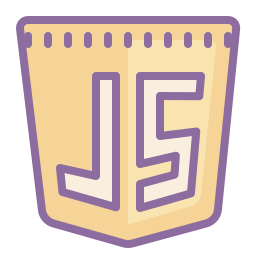
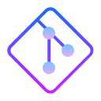

My Main Skills

Javascript

Git
Hello World ! 🙂
I am Natalie, a developer with a passion for making the web a beautiful and functional place.
I started my journey as a programmer in 2019 by learning the holy trinity of web development: HTML, CSS and Javascript.
With this solid foundation I then focused on a modern application framework: React.
I am a forever student, always learning and improving. It has not always been an easy ride, but I am determined to be the best developer I can!
Computers have always intrigued me. They are the epitome of human ingenuity. The way we can manipulate electrons through an algorithm to accomplish an objective is indistinguishable from magic.
Three years ago, I finally had the opportunity to learn computer science and pursue a career in programming; as a result of my recent move from California, where I had little free time.
I started by reading a book by one of the creators of CSS, Jennifer Niederst Robbins Learning Web Design. The book captured my attention from start to finish. As I was reading it, I looked online for exercises to practice. The author recommended Codecademy, and people on Reddit raved about FreeCodeCamp. I decided to take on both in parallel, along with some Udemy courses.
Their curriculum was well-structured. It was light enough for someone without programming experience to follow. However, the introductory courses were unrealistic, as they held my hand the entire time. They were good enough to get started, but as I was about to discover, real-world programming rarely follows such a straight line.
For two years I focused on learning the essentials: HTML, CSS and JavaScript. I decided to spend a lot of time understanding the in and outs of these three foundational technologies, because even when using the fanciest frameworks and libraries they are the backbone of the World Wide Web.
I doubted myself a number of times as the advanced courses got more complex and challenging. However, as time went on, I got used to getting stuck, and to persevere and work hard in spite of feeling uncomfortable.
At one point I wanted a more structured path towards modern web development, so I enrolled in a bootcamp. My solid foundations in the core web technologies enabled me to reap the full benefits of the curriculum. It was still challenging, but having like-minded classmates, and working in a team made the ride enjoyable.
This was a full-time in-person 5-months course focused on full-stack web development with React and NodeJS. Besides the purely technical it was organized as a job in a start-up: Agile project management, communication with teammates and clients over Slack, code collaboration on GitHub, etc.
As the final project, myself and four of my classmates created a MVP from scratch, backend and frontend, for a German startup. It was an amazing experience as I grew confident about my skills and positive contributions to a team.
I'm thrilled to have a job that I'm passionate about. It is my intention to keep improving until I am the best programmer I can be. Thanks for reading about my journey. I look forward to discussing my skills and goals as a developer with you.
Together with four other developers, I created an app from scratch where the host of a party, usually a children's one, can share with guests what they want as a gift; in this way, the child can receive a more meaningful present.
We fell in love with the idea; personally I don't aprecciate all the waste of resources of the toy industry.
Using MySQL and Node.JS on the back end, and React, Bootstrap and SASS on the front end, we created a beautiful MVP.
Within a period of two months, we were assigned different tasks on one-week sprints, using Agile workflows and project-managed by
space-pilots.
A video of all screens and the flow of the application can be viewed here
P.S The source code is not public, but I can show it live in a private interview.
Our goal with this project was to practice all the features of React. When you come from a vanilla Javascript background, developing a "react-mindset" takes practice. This project enabled us to do that effectively.
Most of the App's functionality and architecture were developed by me. CSS and Bootstrap were implemented for the layout.
The purpose of the App is to provide users with a website where they can enter what ingredients are in their fridge.
In return, the application will provide them a list of recipes based on their input.
In addition, the App lists the ingredients that are missing from the recipe, along with a link to where to buy them.
Users can also save their favorite recipes in the browser's local storage for later reference.

This project uses trivia questions from Open Trivia Database API. It scores players based on their answers.
Players can also customize the difficulty and category of the game.
This game is the final solo project for the 11 hours Scrimba React bootcamp by Bob Ziroll.
This great React course is filled with coding challenges and the teacher is excellent.
Along with the main project, I built eight smaller ones during the course.
No libraries or external resources were used either, just React, Javascript, naturally, and SASS.
I've had a lot of fun creating this little game. It's amazing how complex even a simple application like this can be.
The goal of this game is to get all ten dice on the same value in as few rolls and as little time as possible.
Each die is frozen at its current value between rolls when you click it. When all dice are the same, the game is over.
The app keeps track of how long it took you to complete each game and how many times you rolled the dice.
Also, it keeps your best time (the lowest), and the fewer number of rolls that you did on local storage.
Project created with React and vanilla CSS.
As part of a company's hiring process, I completed a personality test in three days.
React.Js and SASS were used to make this small application.
Due to the fact that the inner pages depend on the main state and that the user navigates through the application by pressing buttons, I did not feel the need to use React Router.
I also did not use any libraries.
Although this project is small, it shows that the developer understands how the data flows and how state management works in React.
Disclaimer: I am not a real psychoanalyst, this is only a toy app with fake logic and data.😉
I feel a bit meta writing about this portfolio, but I worked very hard on it, so it deserves to be included among my projects.
I avoided including any external libraries, even though I was tempted to do so on several occasions. I created it from scratch using vanilla JavaScript and CSS.
The logic for the entire site was developed by me; however, there were times when I got stock and had to search the internet for an answer to a problem.
The most challenging part was creating the Hamburger menu and carrousel for the projects. The logic of the carrousel is the part I am most proud of.
I am aware I reinvented the wheel on several parts of this project. I also know there are better and more efficient ways to do things, but I wanted to experiment with my own solutions for this portfolio.